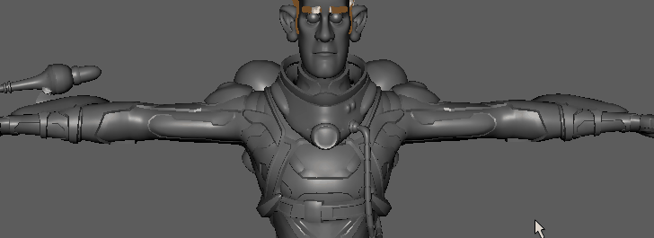

您可以为动画控制器指定可见性设置，以便仅当鼠标靠近它们时它们才会显示。您使用的场景中有多组控制器时，可以通过此方法来整理视口。

设置控制器的可见性
- 您必须具有设置了控制器的装备。要在装备上设置控制器，请参见将对象标记为控制器。
- 在“属性编辑器”(Attribute Editor)中找到 <控制器>_tag 属性。
- 在“可见性模式”(Visibility Mode)菜单中选择“在鼠标附近显示”(Show on Mouse Proximity)，为控制器指定基于距离的可见性。
注： 如果控制器未显示，请确保“显示控制器”(Show Controllers)在菜单中处于活动状态。
如果您的装备设置了一个控制器层次，请选择“继承父控制器”(Inherit Parent Controller)，为父节点和选定的子节点设置可见性模式。这样，您可以从单一位置打开或关闭可见性。
如果使用曲线作为绑定控制器，则可以使用“属性编辑器”(Attribute Editor)的“对象显示”(Object Display)部分的“曲线形状”(Curve Shape)选项卡中的“始终在顶部绘制”(Always Draw on Top)选项使曲线保持可见，即使它被遮挡也是如此。